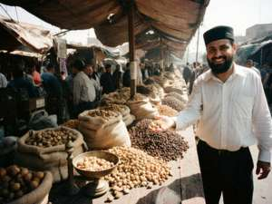

DRIED FRUITS & WALNUTS · WHOLESALE · ОПТОМ · ULGURJI
|
Assalomu alaykum! Welcome! Our family has traded dried fruit at the Bazar-Korgon market since my grandfather's time. Since 1996 we sell wholesale: to shops and bazaars in Talas and Nurzhan, to restaurants, and across the border to Andijan, Almaty and Bishkek. Walnuts come direct from the families in Arslanbob, the biggest walnut forest in the world. Apricots and raisins from our own orchards and the orchards of relatives along the Fergana rim. Clean. Dry. Correct weight. Each bag is weighed in front of you. |
 Our place at the Bazar-Korgon market, row 4. That is me with the walnuts. |
- Walnuts, Arslanbob — in shell, thin shell "qog'oz" (paper) type; and shelled, light halves (Extra) and pieces
- Dried apricots — kuraga (without stone, orange, sulphured), urik (whole with stone, natural, brown), bargak (halves, sun dried)
- Raisins — golden sabza, dark kishmish, big black avlon
- Prunes, dried cherries, dried mulberry (tut)
- Apricot kernels (sweet, roasted salted) and almonds
- Pistachio — on order only, from Afghanistan side
Wholesale from 50 kg. Prices per 1 kg, at our warehouse in Bazar-Korgon. Som or US dollars (5 som = $1).
| Product | som/kg | USD/kg | Note |
| Walnut in shell, Arslanbob, new crop | 9.00 | 1.80 | from 10 October |
| Walnut kernel, light halves "Extra" | 22.50 | 4.50 | |
| Walnut kernel, pieces | 16.00 | 3.20 | |
| Kuraga, orange, 1st grade | 10.50 | 2.10 | |
| Urik, natural | 7.00 | 1.40 | |
| Raisin sabza golden | 8.00 | 1.60 | |
| Raisin kishmish dark | 6.50 | 1.30 | |
| Prunes | 9.50 | 1.90 | |
| Apricot kernel roasted | 15.00 | 3.00 |
Prices may change. For 1 tonne and more, special price, call. Retail at the stall is different.
- Talas, Nurzhan — our KamAZ goes every Tuesday over the mountains (SR1). 2 days. Price per kg depends on the season, in winter when the passes close we go round.
- Andijan — through Dostuk crossing. Uzbek paperwork is your side.
- Almaty, Bishkek — by our partner's truck. Russia and further: we arrange with forwarders, ask.
- Packing: jute or polypropylene bags 25 / 50 kg, or boxes for kuraga 10 kg.
Сухофрукты и грецкий орех оптом от производителя. Арсланбоб, Базар-Коргон. Курага, урюк, изюм, чернослив, орех в скорлупе и очищенный. Доставка в Талас, Нуржан, Алматы, Бишкек. Цены договорные от 1 тонны. Звоните!
Otabek Akhmedov
Bazar-Korgon market, row 4, and warehouse behind the cotton gin
Tel. / fax: 6-17-48-22 mobile: 0502 31 77 05
E-mail: otabek_meva@attelkom.net
Office hours: every day 7:00-15:00 except Friday after noon
English, Russian, Uzbek, Iradi. My son Sardor answers e-mail in English.
Updated 25.09.2003